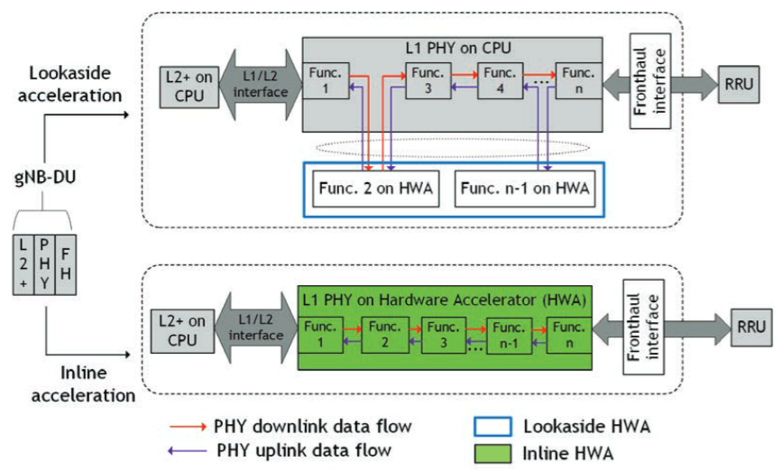
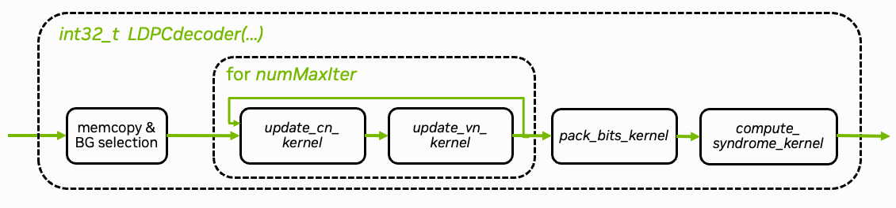

Part 2: CUDA Implementation#
{kind=link}

Fig. 22 Inline and lookaside in the gNB DU processing pipeline. The figure is from [Kundu2023B]. Note that the DGX Spark and Jetson AGX Thor platform use a unified memory architecture, which can be seen as a hybrid of the inline and lookaside memory management.#
The second part of this tutorial focuses on the implementation of the LDPC decoder using CUDA and explains the common pitfalls when offloading compute-intensive functions to the GPU. Further, we show how GPU acceleration offloading of the LDPC decoding can be integrated into the OAI stack.
Function offloading to dedicated accelerators requires careful consideration of the data flow with respect to the underlying memory architecture. This is especially critical for wireless communications applications, where strict latency requirements in the receiver processing pipeline necessitate efficient memory management when utilizing dedicated signal processing accelerators.
As shown in Fig. 22, one needs to distinguish between inline and lookaside acceleration. While lookaside acceleration moves data between the CPU and the hardware accelerator, inline acceleration avoids such data movement by applying the entire processing pipeline on the hardware accelerator.
Strictly speaking, DGX Spark still moves data between the CPU and GPU. However, the overhead is significantly reduced compared to traditional split-memory architectures as DGX Spark shares the same physical memory between CPU and GPU. This has implications for the caching behavior and requires a careful implementation of the CUDA kernels to avoid performance degradation. Nevertheless, we will consider it as inline acceleration for the following discussion.
For further details on CUDA, we refer to the NVIDIA CUDA Programming Guide [CUDA2024] and for the Jetson platform to the CUDA for Tegra Memory Model [Tegra2024].
Overview#
{kind=link}

Fig. 23 Overview of CUDA implementation of the LDPC BP decoding algorithm.#
The CUDA implementation can be found in plugins/ldpc_cuda/src/runtime/ldpc_decoder.cu. The core decoding algorithm is implemented in the update_cn_kernel(.) and update_vn_kernel(.) functions. Both kernels are iteratively called and perform the check node (CN) and variable node (VN) updates, respectively. The decoder stops when the maximum number of iterations is reached. An additional early stopping condition could also be applied to reduce the average number of iterations.
The pack_bits_kernel(.) kernel maps the soft-values to hard-decided bits and packs them into a more compact byte-representation which is required for the OAI processing pipeline.
CUDA Integration in OAI#
The LDPC decoder is implemented as shared library that can be loaded using the OAI shared library loader.
The implementation is in plugins/ldpc_cuda/src/runtime/ldpc_decoder.cu. After modifying it, rebuild the Docker images:
./scripts/build-oai-images.sh
Running the Decoder#
The CUDA-based decoder can be used as a drop-in replacement for the existing decoder implementations. It can be loaded when running the gNB via the following GNB_EXTRA_OPTIONS in the .env file of the config folder.
GNB_EXTRA_OPTIONS=--loader.ldpc.shlibversion _cuda
We strongly recommend to additionally assign dedicated CPU cores to PHY-layer processing via the thread-pool option. This assigns the cores 5-9 to the PHY layer thread pool. Note that the lower CPU cores are assigned to handle the USRP-related tasks such as time synchronization.
You can now start the gNB with the CUDA-based decoder by running
scripts/start_system.sh rfsim # replace with b200 or other config folder
The GPU load can be monitored via
nvidia-smi # or jtop on Jetson devices
Congratulations! You have now successfully accelerated the LDPC decoder using CUDA.
Check the gNB logs for the CUDA decoder:
docker logs oai-gnb
You should see the CUDA decoder being used (requires iperf3 traffic to trigger the decoder):
> ...
> [NR_PHY] I {L1_rx_thread} CUDA LDPC decoder: 123.55 us ( 96.54 us / seg)
> ...
Implementation Aspects#
The following sections focus on various technical aspects of the CUDA implementation and the performance implications of different memory transfer patterns.
For debugging and profiling, please refer to the tutorial on Debugging & Troubleshooting.
Memory Management#
In order to offload compute-intensive processing to the GPU, data needs to be shared between the host (CPU) and the device (GPU). We can leverage the shared system memory architecture of DGX Spark and Jetson platforms to avoid the bottleneck of costly memory transfers on traditional split-memory platforms.
In fact, we can avoid the overhead of any complex API calls and memory transition operations by allocating page-locked memory on the host using cudaHostAlloc. To make input LLRs visible to the GPU, we then use a simple memcpy() operation to copy inputs from the 5G stack over into such a page-locked buffer, where unified memory addressing allows direct reads and writes both on the host and the device. For output bits, we first synchronize the parallel CUDA command stream and then simply use memcpy() to copy packed bits from the shared page-locked buffer into the 5G stack output buffer.
This simplicity is enabled by the unified memory architecture. On DGX Spark (Grace Blackwell), hardware cache coherency via NVLink-C2C ensures efficient data sharing. On Jetson platforms, the cache semantics [Tegra2024] require host caches to be active while device memory caching is disabled on page-locked buffers. For optimal performance on both platforms, we ensure maximally coalesced read-once and write-once memory access patterns (addressing consecutive memory in consecutive threads).
Traditional memory transfer patterns designed for split-memory architectures can also be used on DGX Spark, but can lead to higher overheads depending on the exact architecture and generation. Explicit memory transfer calls such as cudaMemcpyAsync(inputs..., cudaMemcpyHostToDevice, stream) and cudaMemcpyAsync(outputs..., cudaMemcpyDeviceToHost, stream) incur additional API overheads and may depend on availability of additional copy engines; explicit transitioning of managed pageable memory allocated by cudaMallocManaged() by cudaStreamAttachMemAsync() may also require excessive API overhead for small buffer sizes. Therefore, we instead use the patterns described above to optimize for shared system memory and low latency, particularly since input and output buffers are typically small in the real-time 5G stack.
Note
On the DGX Spark architecture, cudaMallocManaged() can be even more efficient for some use cases. For an example implementation, see the 5G NR PUSCH Neural Receiver tutorial.
For comparison, we show both variants side-by-side in the following code, where the latency-optimized code path is the one with USE_UNIFIED_MEMORY defined.
We copy the input LLRs from the host to the device memory in the ldpc_decoder.cu file:
1 // copy input data to device-visible memory
2#ifdef USE_UNIFIED_MEMORY
3 memcpy(const_cast<int8_t*>(mapped_llr_in), llr_in, num_llrs * sizeof(*llr_in));
4#else
5 CHECK_CUDA(cudaMemcpyAsync(const_cast<int8_t*>(mapped_llr_in), llr_in, num_llrs * sizeof(*llr_in), cudaMemcpyHostToDevice, stream));
6#endif
7 // END marker-copy-input
8
9#ifdef PRINT_TIMES
10 clock_gettime( TIMESTAMP_CLOCK_SOURCE, &ts_cursor );
11
12 time_ns = ts_cursor.tv_nsec - ts_begin.tv_nsec + 1000000000ll * (ts_cursor.tv_sec - ts_begin.tv_sec);
13 message_count = add_measurement(&input_copy_time, time_ns, 500);
14 if (message_count % 500 == 0) {
15 time_ns = input_copy_time.avg_ns;
16 printf("Input copy time: %llu us %llu ns\n", time_ns / 1000, time_ns - time_ns / 1000 * 1000);
17 fflush(stdout);
18 }
19#endif
20
21 int8_t const* llr_total = mapped_llr_in;
22
23 for (uint32_t i = 0; i < num_iter; ++i) {
24 dim3 threads(NODE_KERNEL_BLOCK, UNROLL_NODES);
25
26 // check node update
27 dim3 blocks_cn(blocks_for(bg.num_rows * Z, threads.x));
28 // note: llr_msg not not read, only written to in first iteration; will be filled with outputs of this function
29 update_cn_kernel<<<blocks_cn, threads, 0, stream>>>(
30 llr_total, context.llr_msg_buffer,
31 Z, bg.cn, bg.cn_degree, bg.cn_stride, bg.num_rows, i==0);
32
33 // variable node update
34 dim3 blocks_vn(blocks_for(bg.num_cols * Z, threads.x));
35 // note: llr_total only written to
36 update_vn_kernel<<<blocks_vn, threads, 0, stream>>>(
37 context.llr_msg_buffer, mapped_llr_in, context.llr_total_buffer,
38 Z, bg.vn, bg.vn_degree, bg.vn_stride, bg.num_cols, bg.num_rows);
39 llr_total = context.llr_total_buffer;
40 }
41
42 uint8_t *mapped_llr_bits_out = context.llr_bits_out_buffer;
43
44 // pack bits
45 dim3 threads_pack(PACK_BITS_KERNEL_THREADS);
46 dim3 blocks_pack(blocks_for(block_length, threads_pack.x));
47 pack_bits_kernel<<<blocks_pack, threads_pack, 0, stream>>>(
48 llr_total, mapped_llr_bits_out, block_length);
49#ifndef USE_UNIFIED_MEMORY
50 CHECK_CUDA(cudaMemcpyAsync(llr_bits, mapped_llr_bits_out, num_out_bytes, cudaMemcpyDeviceToHost, stream));
51#endif
52
53 // allow CPU access of output bits while computing syndrome
54#if defined(USE_UNIFIED_MEMORY) && !defined(USE_GRAPHS)
55 cudaStreamSynchronize(stream);
56#endif
57
58#ifdef PRINT_TIMES
59 clock_gettime( TIMESTAMP_CLOCK_SOURCE, &ts_cursor );
60#endif
61
62 // check syndrome if additional testing is requested
63 if (perform_syndrome_check) {
64 dim3 threads(512);
65 dim3 blocks_cn(blocks_for(num_cn, threads.x));
66 compute_syndrome_kernel<<<blocks_cn, threads, 0, stream>>>(
67 context.llr_total_buffer, context.syndrome_buffer,
68 Z, bg.cn, bg.cn_degree, bg.cn_stride, bg.num_rows);
69#ifndef USE_UNIFIED_MEMORY
70 CHECK_CUDA(cudaMemcpyAsync(context.host_syndrome_buffer, context.syndrome_buffer, num_cn * sizeof(*context.syndrome_buffer) / 32, cudaMemcpyDeviceToHost, stream));
71#endif
72 }
73
74#ifdef USE_GRAPHS
75 cudaGraph_t graphUpdate = {};
76 CHECK_CUDA(cudaStreamEndCapture(stream, &graphUpdate));
77 if (context.graphCtx) {
78 cudaGraphNode_t errorNode;
79 cudaGraphExecUpdateResult updateResult;
80 CHECK_CUDA(cudaGraphExecUpdate(context.graphCtx, graphUpdate, &errorNode, &updateResult));
81 }
82 else
83 CHECK_CUDA(cudaGraphInstantiate(&context.graphCtx, graphUpdate, 0));
84 cudaGraphDestroy(graphUpdate);
85 CHECK_CUDA(cudaGraphLaunch(context.graphCtx, stream));
86#endif
87
88#if !defined(USE_UNIFIED_MEMORY) || defined(USE_GRAPHS)
89 // allow CPU access of output bits and syndrome
90 cudaStreamSynchronize(stream);
91#endif
92
93#ifdef USE_UNIFIED_MEMORY
94 // note: GPU synchronized before async syndrome check
95 memcpy(llr_bits, mapped_llr_bits_out, num_out_bytes);
96#endif
97
98#ifdef PRINT_TIMES
99 clock_gettime( TIMESTAMP_CLOCK_SOURCE, &ts_end );
100
101 time_ns = ts_end.tv_nsec - ts_cursor.tv_nsec + 1000000000ll * (ts_end.tv_sec - ts_cursor.tv_sec);
102 message_count = add_measurement(&output_copy_time, time_ns, 500);
103 if (message_count % 500 == 0) {
104 time_ns = output_copy_time.avg_ns;
105 printf("Output copy time: %llu us %llu ns\n", time_ns / 1000, time_ns - time_ns / 1000 * 1000);
106 fflush(stdout);
107 }
108#endif
109
110 if (perform_syndrome_check) {
111 uint32_t* p_syndrome;
112#ifdef USE_UNIFIED_MEMORY
113 #ifndef USE_GRAPHS
114 // allow reading syndrome
115 cudaStreamSynchronize(stream);
116 #endif
117 p_syndrome = context.syndrome_buffer;
118#else
119 // note: already synchronized above
120 p_syndrome = context.host_syndrome_buffer;
121#endif
122
123 // check any errors indicated by syndrome
124 for (uint32_t i = 0; i < num_cn / 32; i++) {
125 if (p_syndrome[i] != 0) {
126 return num_iter+1;
127 }
128 }
129 }
130
131#ifdef PRINT_TIMES
132 clock_gettime( TIMESTAMP_CLOCK_SOURCE, &ts_end );
133
134 time_ns = ts_end.tv_nsec - ts_begin.tv_nsec + 1000000000ll * (ts_end.tv_sec - ts_begin.tv_sec);
135 message_count = add_measurement(&decoding_time, time_ns, 500);
136 if (message_count % 500 == 0) {
137 time_ns = decoding_time.avg_ns;
138 printf("CUDA sync runtime: %llu us %llu ns\n", time_ns / 1000, time_ns - time_ns / 1000 * 1000);
139 fflush(stdout);
140 }
141#endif
142
143 return num_iter-1; // note: now index of successful iteration
144}
145
146ThreadContext& ldpc_decoder_init_context(int make_stream) {
147 auto& context = thread_context;
148 if (context.llr_in_buffer) // lazy
149 return context;
150
151 printf("Initializing LDPC context (TID %d)\n", (int) gettid());
152
153 if (make_stream) {
154 int highPriority = 0;
155 if (cudaDeviceGetStreamPriorityRange(NULL, &highPriority))
156 printf("CUDA stream priorities unsupported, %s:%d", __FILE__, __LINE__);
157 CHECK_CUDA(cudaStreamCreateWithPriority(&context.stream, cudaStreamNonBlocking, highPriority));
158
159 cudaStreamAttrValue attr = {};
160 attr.syncPolicy = cudaSyncPolicyYield;
161 cudaStreamSetAttribute(context.stream, cudaStreamAttributeSynchronizationPolicy, &attr);
162 }
163
164 CHECK_CUDA(cudaMallocStaging(&context.llr_in_buffer, MAX_BG_COLS * MAX_Z * sizeof(int8_t), cudaHostAllocMapped | cudaHostAllocWriteCombined));
165 CHECK_CUDA(cudaMallocStaging(&context.llr_bits_out_buffer, (MAX_BLOCK_LENGTH + 7) / 8 * sizeof(uint8_t), cudaHostAllocMapped));
166 CHECK_CUDA(cudaMallocStaging(&context.syndrome_buffer, MAX_BG_ROWS * MAX_Z * sizeof(uint32_t) / 32, cudaHostAllocMapped));
167#ifndef USE_UNIFIED_MEMORY
168 context.host_syndrome_buffer = (uint8_t*) malloc(MAX_BG_ROWS * MAX_Z * sizeof(uint8_t));
169#endif
170 CHECK_CUDA(cudaMalloc(&context.llr_msg_buffer, MAX_BG_ROWS * MAX_BG_COLS * MAX_Z * sizeof(llr_msg_t)));
171 CHECK_CUDA(cudaMalloc(&context.llr_total_buffer, MAX_BG_COLS * MAX_Z * sizeof(llr_accumulator_t)));
172
173 // keep track of active thread contexts for shutdown
174 ThreadContext* self = &context;
175 __atomic_exchange(&initialized_thread_contexts, &self, &self->next_initialized_context, __ATOMIC_ACQ_REL);
176
177 return context;
178}
179
180extern "C" ThreadContext* ldpc_decoder_init(int make_stream) {
181 if (bg_cn[0][0]) // lazy, global
182 return &ldpc_decoder_init_context(make_stream);
183
184 printf("Initializing LDPC runtime %d\n", (int) gettid());
185
186 const uint32_t* table_bg_cn_degree[2][8] = { { BG1_CN_DEGREE_TABLE() }, { BG2_CN_DEGREE_TABLE() } };
187 const uint32_t* table_bg_vn_degree[2][8] = { { BG1_VN_DEGREE_TABLE() }, { BG2_VN_DEGREE_TABLE() } };
188 const uint32_t table_bg_cn_degree_size[2][8] = { { BG1_CN_DEGREE_TABLE(sizeof) }, { BG2_CN_DEGREE_TABLE(sizeof) } };
189 const uint32_t table_bg_vn_degree_size[2][8] = { { BG1_VN_DEGREE_TABLE(sizeof) }, { BG2_VN_DEGREE_TABLE(sizeof) } };
190 const void* table_bg_cn[2][8] = { { BG1_CN_TABLE() }, { BG2_CN_TABLE() } };
191 const void* table_bg_vn[2][8] = { { BG1_VN_TABLE() }, { BG2_VN_TABLE() } };
192 const uint32_t table_bg_cn_size[2][8] = { { BG1_CN_TABLE(sizeof) }, { BG2_CN_TABLE(sizeof) } };
193 const uint32_t table_bg_vn_size[2][8] = { { BG1_VN_TABLE(sizeof) }, { BG2_VN_TABLE(sizeof) } };
194
195 for (int b = 0; b < 2; ++b) {
196 for (int ils = 0; ils < 8; ++ils) {
197 CHECK_CUDA(cudaMalloc(&bg_cn_degree[b][ils], table_bg_cn_degree_size[b][ils]));
198 CHECK_CUDA(cudaMemcpy(const_cast<uint32_t*>(bg_cn_degree[b][ils]), table_bg_cn_degree[b][ils], table_bg_cn_degree_size[b][ils], cudaMemcpyHostToDevice));
199 CHECK_CUDA(cudaMalloc(&bg_vn_degree[b][ils], table_bg_vn_degree_size[b][ils]));
200 CHECK_CUDA(cudaMemcpy(const_cast<uint32_t*>(bg_vn_degree[b][ils]), table_bg_vn_degree[b][ils], table_bg_vn_degree_size[b][ils], cudaMemcpyHostToDevice));
201
202 CHECK_CUDA(cudaMalloc(&bg_cn[b][ils], table_bg_cn_size[b][ils]));
203 CHECK_CUDA(cudaMemcpy(const_cast<uint32_t*>(bg_cn[b][ils]), table_bg_cn[b][ils], table_bg_cn_size[b][ils], cudaMemcpyHostToDevice));
204 CHECK_CUDA(cudaMalloc(&bg_vn[b][ils], table_bg_vn_size[b][ils]));
205 CHECK_CUDA(cudaMemcpy(const_cast<uint32_t*>(bg_vn[b][ils]), table_bg_vn[b][ils], table_bg_vn_size[b][ils], cudaMemcpyHostToDevice));
206
207 bg_cn_size[b][ils] = table_bg_cn_size[b][ils];
208 bg_vn_size[b][ils] = table_bg_vn_size[b][ils];
209 }
210 }
211
212 return &ldpc_decoder_init_context(make_stream);
213}
214
215extern "C" void ldpc_decoder_shutdown() {
216 cudaDeviceSynchronize();
217
218 ThreadContext* active_context = nullptr;
219 __atomic_exchange(&initialized_thread_contexts, &active_context, &active_context, __ATOMIC_ACQ_REL);
220 while (active_context) {
221 cudaFreeStaging(active_context->llr_in_buffer);
222 cudaFree(active_context->llr_msg_buffer);
223 cudaFreeStaging(active_context->llr_bits_out_buffer);
224 cudaFree(active_context->llr_total_buffer);
225 cudaFreeStaging(active_context->syndrome_buffer);
226#ifndef USE_UNIFIED_MEMORY
227 free(active_context->host_syndrome_buffer);
228#endif
229 if (active_context->stream)
230 cudaStreamDestroy(active_context->stream);
231
232#ifdef USE_GRAPHS
233 cudaGraphExecDestroy(active_context->graphCtx);
234#endif
235
236 active_context = active_context->next_initialized_context;
237 }
238
239 for (int b = 0; b < 2; ++b) {
240 for (int ils = 0; ils < 8; ++ils) {
241 cudaFree(&bg_cn_degree[b][ils]);
242 cudaFree(&bg_vn_degree[b][ils]);
243 cudaFree(&bg_cn[b][ils]);
244 cudaFree(&bg_vn[b][ils]);
245 }
246 }
247}
248
249#ifdef ENABLE_NANOBIND
250
251#include <nanobind/nanobind.h>
252#include <nanobind/ndarray.h>
253
254namespace nb = nanobind;
255
256NB_MODULE(ldpc_decoder, m) {
257 m.def("decode", [](uint32_t BG, uint32_t Z,
258 const nb::ndarray<int8_t, nb::shape<-1>, nb::device::cpu>& llrs,
259 uint32_t block_length, uint32_t num_iter) {
260 auto* context = ldpc_decoder_init(1); // lazy
261
262 size_t num_bytes = (block_length + 7) / 8 * 8;
263 uint8_t *data = new uint8_t[num_bytes];
264 memset(data, 0, num_bytes);
265 nb::capsule owner(data, [](void *p) noexcept { delete[] (uint8_t*) p; });
266
267 ldpc_decode(context, 0, BG, Z, llrs.data(),
268 block_length, data,
269 num_iter, true);
270
271 return nb::ndarray<nb::numpy, uint8_t>(data, {num_bytes}, owner);
272 });
273}
274
275#endif
1 // copy input LLRs from the host to the device memory
2 cudaMemcpyAsync(context.llr_in_buffer, p_in, memorySize_llr_in, cudaMemcpyHostToDevice, context.stream);
After decoding, we make the output bits available via a host-side copy in parallel to an asynchronous syndrome check on the device:
1 // pack LDPC output bits on the device
2 int pack_thread_blocks = (block_length + 127) / 128;
3 pack_decoded_bit_kernel<<<pack_thread_blocks, 128, 0, context.stream>>>(context.dev_llr_out, context.dev_bits_out, block_length);
4
5 // allow CPU access of output bits while computing syndrome
6#ifdef USE_UNIFIED_MEMORY
7 cudaStreamSynchronize(context.stream);
8
9 // ... schedule syndrome or CRC check ...
10
11 // while syndrome computations are running on the device, copy output bits to 5G stack output buffer
12 memcpy(p_out, context.dev_bits_out, memorySize_bits_out);
13#else
14 cudaCheck(cudaMemcpyAsync(p_out, context.dev_bits_out, memorySize_bits_out, cudaMemcpyDeviceToHost, context.stream));
15
16 // ... schedule syndrome or CRC check ...
17
18 // allow CPU access of output bits and syndrome
19 cudaStreamSynchronize(context.stream);
20#endif
Kernel Optimization#
The core idea of CUDA programming is to parallelize the execution of the kernel on the GPU. The kernel is executed by a grid of blocks, each containing a number of independent threads. This level of parallelism allows for significant speedups compared to the serial execution on the CPU.
For a detailed introduction to CUDA programming, we refer to the CUDA Programming Guide. Conceptually, a CUDA kernel is defined as follows
// Kernel definition: __global__ indicates that the function is a CUDA kernel
__global__ void my_kernel(float *data, int N) {
// Each thread processes one element of the array
// We calculate the global thread index from the block and thread indices
// idx is unique for each thread
int idx = threadIdx.x + blockIdx.x * blockDim.x;
if (idx < N) {
// process the idx-th element of the array
data[idx] = ...;
}
}
This kernel can now be launched by specifying its grid and block dimensions via
// Launch the kernel
// <<<1, 32>>> specifies the grid and block sizes
my_kernel<<<1, 32>>>(d_data, N);
For the case of LDPC decoding, the decoder can be parallelized over the number of variable (VN) and check node (CN) updates, respectively. An overview of the CUDA implementation is given in Fig. 23. The VN update kernel is given as
1__launch_bounds__(UNROLL_NODES*NODE_KERNEL_BLOCK, 3)
2static __global__ void update_vn_kernel(llr_msg_t const* __restrict__ llr_msg, int8_t const* __restrict__ llr_ch, llr_accumulator_t* __restrict__ llr_total,
3 uint32_t Z, uint32_t const* __restrict__ bg_vn, uint32_t const* __restrict__ bg_vn_degree, uint32_t max_degree, uint32_t num_cols, uint32_t num_rows) {
4 uint32_t tid = blockIdx.x * blockDim.x + threadIdx.x;
5
6 uint32_t i = tid % Z; // for i in range(Z)
7 uint32_t idx_col = tid / Z; // for idx_col in range(num_cols)
8
9 uint32_t vn_degree = bg_vn_degree[idx_col];
10
11 // list of tuples (idx_row = index_cn, s)
12 // idx_col = idx_vn and msg_offset omitted,
13 // msg spread out to idx_cn + idx_vn * num_cn
14 uint32_t const* variable_nodes = &bg_vn[idx_col * max_degree]; // len(vn) = vn_degree
15
16#if UNROLL_NODES > 1
17 __shared__ int msg_sums[UNROLL_NODES][NODE_KERNEL_BLOCK+1];
18 msg_sums[threadIdx.y][threadIdx.x] = 0;
19#endif
20
21 __syncwarp();
22
23 int msg_sum = 0;
24 // accumulate all incoming LLRs
25 if (idx_col < num_cols) {
26 for (uint32_t j = threadIdx.y; j < vn_degree; j += UNROLL_NODES) {
27 uint32_t vn = variable_nodes[j];
28
29 // see packing layout above
30 uint32_t idx_row = vn & 0xffffu; // note: little endian
31 uint32_t s = vn >> 16; // ...
32 uint32_t msg_offset = idx_row + idx_col * num_rows;
33
34 // index of the msg in the LLR array
35 // it is the idx_col-th variable node, and the j-th message from the idx_row-th check node
36 uint32_t msg_idx = msg_offset * Z + (i-s+(Z<<8))%Z;
37
38 // accumulate all incoming LLRs
39 msg_sum += llr_msg[msg_idx];
40 }
41 }
42
43 // add the channel LLRs
44 __syncwarp();
45 if (threadIdx.y == 0) {
46 if (idx_col < num_cols)
47 msg_sum += llr_ch[idx_col*Z + i];
48 }
49
50 msg_sum = min(max(msg_sum, -MAX_LLR_ACCUMULATOR_VALUE), MAX_LLR_ACCUMULATOR_VALUE);
51
52#if UNROLL_NODES > 1
53 msg_sums[threadIdx.y][threadIdx.x] = msg_sum;
54
55 __syncthreads();
56
57 if (threadIdx.y == 0) {
58 int msg_sum = 0;
59 for (int i = 0; i < UNROLL_NODES; ++i) {
60 msg_sum += msg_sums[i][threadIdx.x];
61 }
62 msg_sums[0][threadIdx.x] = msg_sum;
63 }
64
65 __syncthreads();
66
67 msg_sum = msg_sums[0][threadIdx.x];
68#endif
69
70 msg_sum = min(max(msg_sum, -MAX_LLR_ACCUMULATOR_VALUE), MAX_LLR_ACCUMULATOR_VALUE);
71
72 __syncwarp();
73 if (idx_col < num_cols)
74 llr_total[idx_col*Z + i] = llr_accumulator_t(msg_sum);
75}
As the OAI processing pipeline uses multiple threads, we need to ensure proper multi-threading support in the CUDA kernel. This is done via a thread specific context that is passed to the kernel. This ensures that each thread operates on its own CUDA stream and, thus, can be executed in parallel without interference.
1struct ThreadContext {
2 cudaStream_t stream = 0;
3
4 // Device memory declarations - use raw pointers instead of device symbols
5 int8_t* llr_in_buffer = nullptr;
6 uint8_t* llr_bits_out_buffer = nullptr;
7 uint32_t* syndrome_buffer = nullptr;
8#ifndef USE_UNIFIED_MEMORY
9 uint32_t* host_syndrome_buffer = nullptr;
10#endif
11 llr_msg_t* llr_msg_buffer = nullptr;
12 llr_accumulator_t* llr_total_buffer = nullptr;
13
14#ifdef USE_GRAPHS
15 cudaGraphExec_t graphCtx = nullptr;
16#endif
17
18 // list of thread contexts for shutdown
19 ThreadContext* next_initialized_context = nullptr;
20};
21static __thread ThreadContext thread_context = { };
Further, the decoder uses clipping values for the extrinsic messages and the VN accumulator.
1 // add the channel LLRs
2 __syncwarp();
3 if (threadIdx.y == 0) {
4 if (idx_col < num_cols)
5 msg_sum += llr_ch[idx_col*Z + i];
6 }
7
8 msg_sum = min(max(msg_sum, -MAX_LLR_ACCUMULATOR_VALUE), MAX_LLR_ACCUMULATOR_VALUE);
9
10#if UNROLL_NODES > 1
11 msg_sums[threadIdx.y][threadIdx.x] = msg_sum;
12
13 __syncthreads();
14
15 if (threadIdx.y == 0) {
16 int msg_sum = 0;
17 for (int i = 0; i < UNROLL_NODES; ++i) {
18 msg_sum += msg_sums[i][threadIdx.x];
19 }
20 msg_sums[0][threadIdx.x] = msg_sum;
21 }
22
23 __syncthreads();
24
25 msg_sum = msg_sums[0][threadIdx.x];
26#endif
27
28 msg_sum = min(max(msg_sum, -MAX_LLR_ACCUMULATOR_VALUE), MAX_LLR_ACCUMULATOR_VALUE);
29
30 __syncwarp();
31 if (idx_col < num_cols)
32 llr_total[idx_col*Z + i] = llr_accumulator_t(msg_sum);
1 // clip msg magnitudes to MAX_LLR_VALUE
2 min_1 = min(max(min_1, -MAX_LLR_MSG_VALUE), MAX_LLR_MSG_VALUE);
3 min_2 = min(max(min_2, -MAX_LLR_MSG_VALUE), MAX_LLR_MSG_VALUE);
Following the same principles, the CN update kernel is given as
1__launch_bounds__(UNROLL_NODES*NODE_KERNEL_BLOCK, 3)
2static __global__ void update_cn_kernel(llr_accumulator_t const* __restrict__ llr_total, llr_msg_t* __restrict__ llr_msg,
3 uint32_t Z, uint32_t const* __restrict__ bg_cn, uint32_t const* __restrict__ bg_cn_degree, uint32_t max_degree, uint32_t num_rows,
4 bool first_iter) {
5 uint32_t tid = blockIdx.x * blockDim.x + threadIdx.x;
6
7 uint32_t i = tid % Z; // for i in range(Z)
8 uint32_t idx_row = tid / Z; // for idx_row in range(num_rows)
9
10 uint32_t cn_degree = bg_cn_degree[idx_row];
11
12 // list of tuples (idx_col = idx_vn, s),
13 // idx_row = idx_cn and msg_offset omitted,
14 // msg spread out to idx_cn + idx_vn * num_cn
15 uint32_t const* check_nodes = &bg_cn[idx_row * max_degree]; // len(cn) = cn_degree
16
17 // search the "extrinsic" min of all incoming LLRs
18 // this means we need to find the min and the second min of all incoming LLRs
19 int min_1 = INT_MAX;
20 int min_2 = INT_MAX;
21 int idx_min = -1;
22 int node_sign = 1;
23 uint32_t msg_signs = 0; // bitset, 0 == positive; max degree is 19
24
25#if UNROLL_NODES > 1
26 __shared__ int mins1[UNROLL_NODES][NODE_KERNEL_BLOCK+1];
27 __shared__ int mins2[UNROLL_NODES][NODE_KERNEL_BLOCK+1];
28 __shared__ int idx_mins[UNROLL_NODES][NODE_KERNEL_BLOCK+1];
29 __shared__ uint32_t signs[UNROLL_NODES][NODE_KERNEL_BLOCK+1];
30 mins1[threadIdx.y][threadIdx.x] = INT_MAX;
31 mins2[threadIdx.y][threadIdx.x] = INT_MAX;
32 signs[threadIdx.y][threadIdx.x] = 0;
33#endif
34
35 __syncwarp();
36
37 if (idx_row < num_rows) {
38 for (uint32_t ii = threadIdx.y; ii < cn_degree; ii += UNROLL_NODES) {
39 uint32_t cn = check_nodes[ii];
40
41 // see packing layout above
42 uint32_t idx_col = cn & 0xffffu; // note: little endian
43 uint32_t s = cn >> 16; // ...
44 uint32_t msg_offset = idx_row + idx_col * num_rows;
45
46 uint32_t msg_idx = msg_offset * Z + i;
47
48 // total VN message
49 int t = llr_total[idx_col*Z + (i+s)%Z];
50
51 // make extrinsic by subtracting the previous msg
52 if (!first_iter)
53 t -= __ldg(&llr_msg[msg_idx]);
54
55 // store sign for 2nd recursion
56 // note: could be also used for syndrome-based check or early termination
57 int sign = (t >= 0 ? 1 : -1);
58 node_sign *= sign;
59 msg_signs |= (t < 0) << ii; // for later sign calculation
60
61 // find min and second min
62 int t_abs = abs(t);
63 if (t_abs < min_1) {
64 min_2 = min_1;
65 min_1 = t_abs;
66 idx_min = msg_idx;
67 } else if (t_abs < min_2)
68 min_2 = t_abs;
69 }
70 }
71
72#if UNROLL_NODES > 1
73 mins1[threadIdx.y][threadIdx.x] = min_1;
74 mins2[threadIdx.y][threadIdx.x] = min_2;
75 idx_mins[threadIdx.y][threadIdx.x] = idx_min;
76 signs[threadIdx.y][threadIdx.x] = msg_signs;
77
78 __syncthreads();
79
80 if (threadIdx.y == 0) {
81 int min_1 = INT_MAX;
82 int min_2 = INT_MAX;
83 int idx_min = -1;
84 uint32_t msg_signs = 0; // bitset, 0 == positive; max degree is 19
85 for (int i = 0; i < UNROLL_NODES; ++i) {
86 int t_abs = mins1[i][threadIdx.x];
87 if (t_abs < min_1) {
88 min_2 = min_1;
89 min_1 = t_abs;
90 idx_min = idx_mins[i][threadIdx.x];
91 } else if (t_abs < min_2)
92 min_2 = t_abs;
93 min_2 = min(min_2, mins2[i][threadIdx.x]);
94 msg_signs |= signs[i][threadIdx.x];
95 }
96 mins1[0][threadIdx.x] = min_1;
97 mins2[0][threadIdx.x] = min_2;
98 idx_mins[0][threadIdx.x] = idx_min;
99 signs[0][threadIdx.x] = msg_signs;
100 }
101
102 __syncthreads();
103
104 min_1 = mins1[0][threadIdx.x];
105 min_2 = mins2[0][threadIdx.x];
106 idx_min = idx_mins[0][threadIdx.x];
107 msg_signs = signs[0][threadIdx.x];
108
109 node_sign = (__popc(msg_signs) & 1) ? -1 : 1;
110#endif
111
112 // START marker-cnp-damping
113 // apply damping factor
114 min_1 = APPLY_DAMPING_INT(min_1); // min_1 * DAMPING_FACTOR, e.g. *3/4
115 min_2 = APPLY_DAMPING_INT(min_2); // min_2 * DAMPING_FACTOR, e.g. *3/4
116 // END marker-cnp-damping
117
118 // clip msg magnitudes to MAX_LLR_VALUE
119 min_1 = min(max(min_1, -MAX_LLR_MSG_VALUE), MAX_LLR_MSG_VALUE);
120 min_2 = min(max(min_2, -MAX_LLR_MSG_VALUE), MAX_LLR_MSG_VALUE);
121 // END marker-vnp-clipping
122
123 __syncwarp();
124
125 // apply min and second min to the outgoing LLR
126 if (idx_row < num_rows) {
127 for (uint32_t ii = threadIdx.y; ii < cn_degree; ii += UNROLL_NODES) {
128 uint32_t cn = check_nodes[ii];
129
130 // see packing layout above
131 uint32_t idx_col = cn & 0xffffu; // note: little endian
132 uint32_t msg_offset = idx_row + idx_col * num_rows;
133
134 uint32_t msg_idx = msg_offset * Z + i;
135 int min_val;
136 if (msg_idx == idx_min)
137 min_val = min_2;
138 else
139 min_val = min_1;
140
141 int msg_sign = (msg_signs >> ii) & 0x1 ? -1 : 1;
142
143 // and update outgoing msg including sign
144 llr_msg[msg_idx] = llr_msg_t(min_val * node_sign * msg_sign);
145 }
146 }
147}
Note that the choice of the clipping values is critical for the performance of the decoder, in particular as the decoder uses mostly signed char variables. This keeps the memory footprint low and can be configured via the following macros
1static const int MAX_LLR_ACCUMULATOR_VALUE = 127;
2typedef int8_t llr_accumulator_t;
3static const int MAX_LLR_MSG_VALUE = 127;
4typedef int8_t llr_msg_t;
For a given lifting factor Z and a number of rows num_rows and columns num_cols given from the BG selection, the following grid and block dimensions are used
1dim3 threads(256);
2// check node update
3dim3 blocks_cn(blocks_for(bg.num_rows * Z, threads.x));
4// VN update
5dim3 blocks_vn(blocks_for(bg.num_cols * Z, threads.x));
1inline __host__ __device__ uint32_t blocks_for(uint32_t elements, int block_size) {
2 return int( uint32_t(elements + (block_size-1)) / uint32_t(block_size) );
3}
Note that the grid and block dimensions are architecture dependent and should be tuned for the specific GPU.
After decoding, the output is hard-decided and packed into a byte-array.
1__launch_bounds__(PACK_BITS_KERNEL_THREADS, 6)
2static __global__ void pack_bits_kernel(llr_accumulator_t const* __restrict__ llr_total, uint8_t* __restrict__ bits, uint32_t block_length) {
3 uint32_t tid = blockIdx.x * blockDim.x + threadIdx.x;
4
5 uint32_t coop_byte = 0;
6 // 1 bit per thread
7 if (tid < block_length)
8 coop_byte = (llr_total[tid] < 0) << (7 - (threadIdx.x & 7)); // note: highest to lowest bit
9
10 // use fast lane shuffles to assemble one byte per group of 8 adjacent threads
11 coop_byte += __shfl_xor_sync(0xffffffff, coop_byte, 1); // xxyyzzww
12 coop_byte += __shfl_xor_sync(0xffffffff, coop_byte, 2); // xxxxyyyy
13 coop_byte += __shfl_xor_sync(0xffffffff, coop_byte, 4); // xxxxxxxx
14
15 // share bytes across thread group to allow one coalesced write by first N threads
16 __shared__ uint32_t bit_block_shared[PACK_BITS_KERNEL_THREADS / 8];
17 if ((threadIdx.x & 0x7) == 0)
18 bit_block_shared[threadIdx.x / 8] = coop_byte;
19
20 __syncthreads();
21
22 // the first (PACK_BITS_KERNEL_THREADS / 8) threads pack 8 bits each
23 if (threadIdx.x < PACK_BITS_KERNEL_THREADS / 8 && blockIdx.x * PACK_BITS_KERNEL_THREADS + threadIdx.x * 8 < block_length) {
24 bits[blockIdx.x * PACK_BITS_KERNEL_THREADS / 8 + threadIdx.x] = bit_block_shared[threadIdx.x];
25 }
26}
Note
The decoder returns the number of iterations and declares a decoding failure by returning max_num_iter if the CRC or the syndrome check fails.
Testing#
Unit tests verify the CUDA decoder against Sionna’s reference implementation using nanobind for Python-CUDA binding. The tests cover multiple code rates for both base graphs (BG1 and BG2).
cd plugins/ldpc_cuda
pytest tests/unit/
The integration test runs the full 5G stack with the CUDA decoder and verifies end-to-end operation via iperf3 traffic.
cd plugins/ldpc_cuda/tests/integration
./run_integration.sh
See plugins/ldpc_cuda/tests/ for the full test suite.
Outlook - Weighted Belief Propagation#
An extension of classical belief propagation is the weighted belief propagation [Nachmani2016] using gradient descent to optimize trainable parameters during message passing. An example implementation can be found in the Sionna tutorial on Weighted Belief Propagation.
When looking at the current implementation of the CN update, we can already see a damping factor of 3/4 applied to each outgoing CN message [Pretti2005].
1#define APPLY_DAMPING_INT(x) (x*3/4)
1 // apply damping factor
2 min_1 = APPLY_DAMPING_INT(min_1); // min_1 * DAMPING_FACTOR, e.g. *3/4
3 min_2 = APPLY_DAMPING_INT(min_2); // min_2 * DAMPING_FACTOR, e.g. *3/4
One could now implement a weighted CN update by simply replacing the damping factor with a trainable parameter from the weighted BP tutorial.
We hope you enjoyed this tutorial. You are now well equipped to accelerate other compute intensive parts of the 5G stack as well by following the same principles.